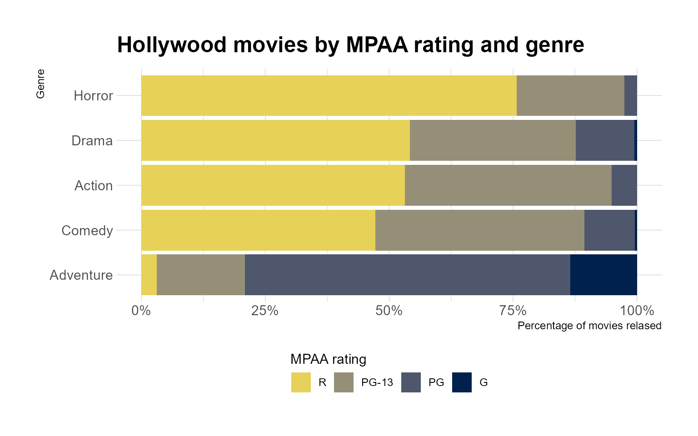
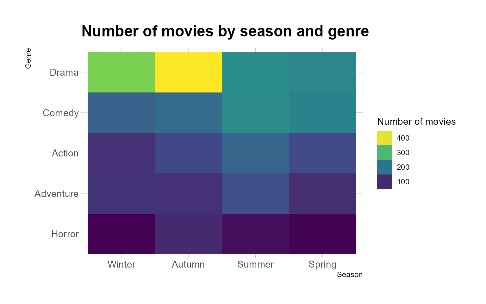
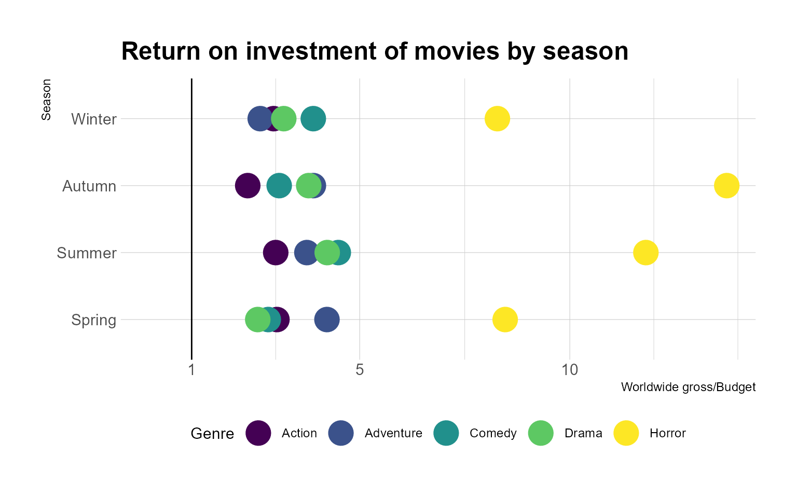
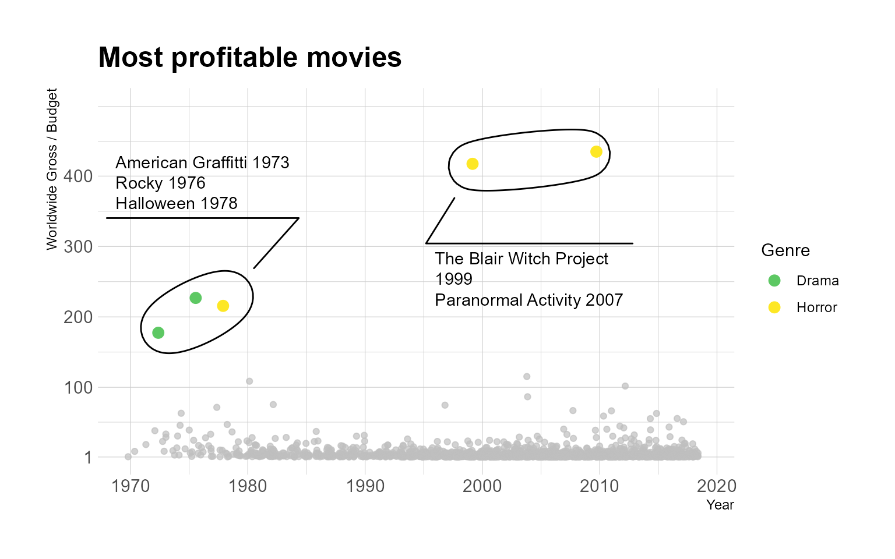
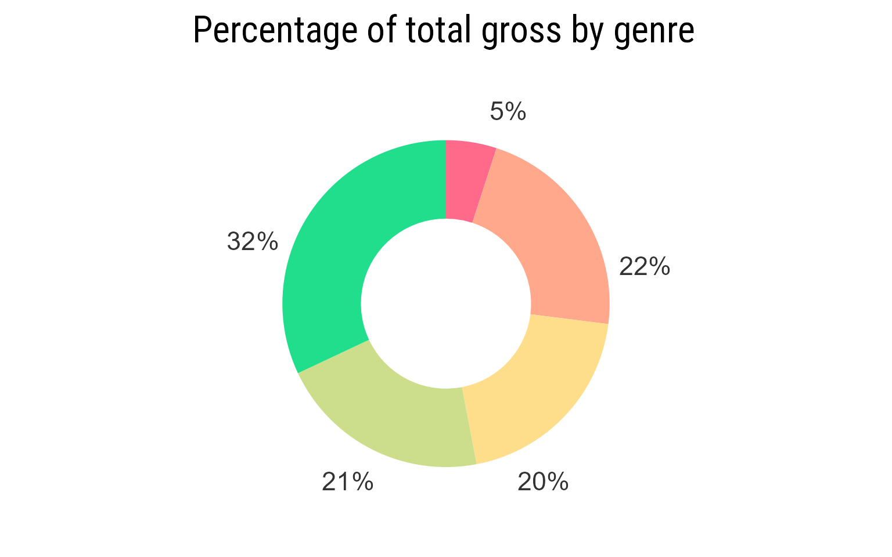
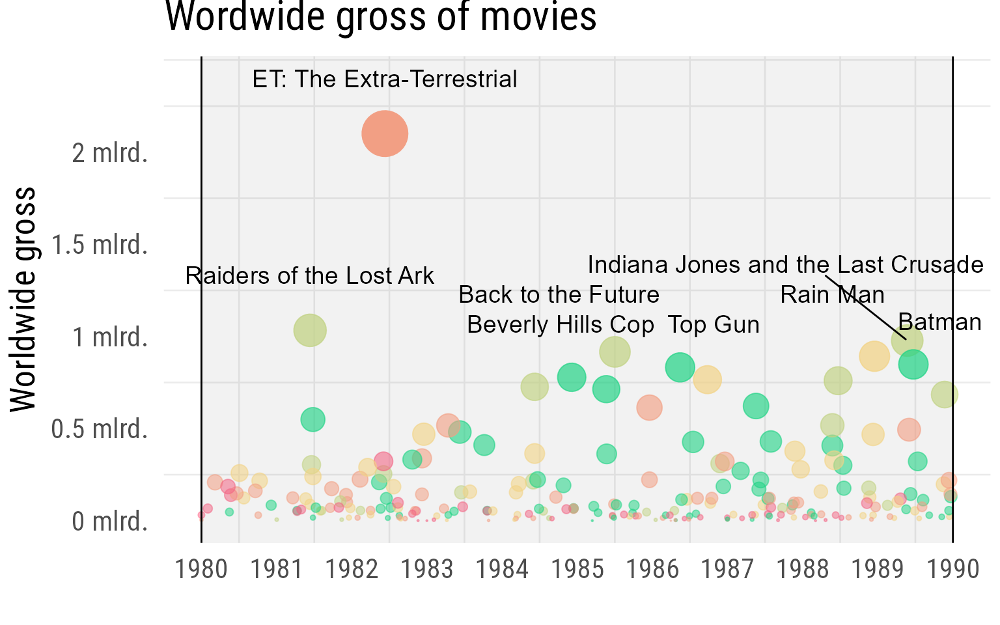
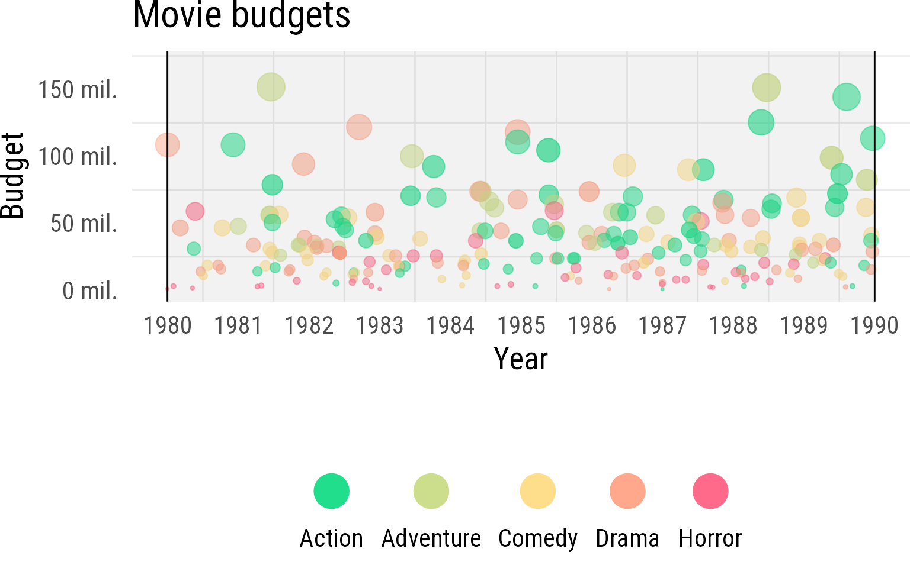
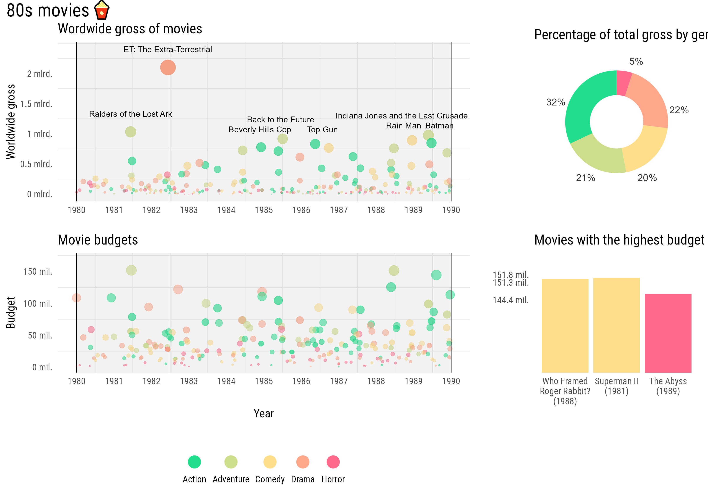

Movies Vizualization
Data üíæ
Source: Tidy tuesday.
Original data source: The numbers.
Main data about movies such as:
• Title
• Production budget
• Worldwide gross
• Domestic gross
• Genre
• MPAA ratinglibrary(here)
source(here("scripts/read_data.R"))
data<- read_and_save_data(here("data/raw/movie_profit.csv"),here("data/clean/movie_profit.RDS"))Plots üìä
Age ratings and genres üë∂
Relationship between movie genres and their MPAA ratings is visualised first.
source(here("scripts/plots_small.R"))plot_1(data)
plot_6(data)plot_3(data)
Budgets and profit üí∞
In addition to genres/MPAA ratings, trends in movie gross and return on investment are visualised.
plot_2(data)
plot_4(data)plot_5(data)
80s deep dive 8️⃣0️⃣
The data is filtered to only include movies released in the 80s and additional analysis is done. For this deep dive budget and gross figures are adjusted for inflation üìà.
library(priceR)
data2 <- data %>%
mutate(
production_budget = adjust_for_inflation(production_budget, year, "US", to_date = 2019),
worldwide_gross = adjust_for_inflation(worldwide_gross, year, "US", to_date = 2019)
) %>%
filter(year %in% 1980:1989)
saveRDS(data2,here("data/clean/movie_profit_adjusted_for_inflation.RDS"))
source(here("scripts/plots_panel.R"))One-by-one
The plots for the deep dive are created individually.
1.
A small donut chart that shows the total gross by genre of the movie.
p1 <- panel_1(data2)
p1
2.
A small bar chart to highlight the movies with the highest budget.
p2 <- panel_2(data2)
p23.
“Big” chart showcasing the highest grossing movies.
p3 <- panel_3(data2)
p3
4.
Another “big” chart showcasing movies with high budgets.
library(svglite)
p4 <- panel_4(data2)
p4
Putting it into an infographic
After creating the individual plots, they are put together into an inforgraphic.
library(patchwork)
a <- "AAAAACC
AAAAACC
AAAAACC
AAAAACC
BBBBBDD
BBBBBDD
BBBBBDD"
p3 + p4 + p1 + p2 + plot_layout(design = a) +
plot_annotation(title = paste("80s movies",emo::ji("popcorn")),theme = theme(plot.title = element_text(size = 32, family = "Roboto Condensed")))
To do ü§î
- Compare movie production companies (which ones make the biggest return on investment, which ones create the biggest blockbusters)
- Find which movies are sequels (do sequels make more money? what kind of movies even get sequels?)
- Find biggest box office flops
- Another deep dive?
Code üìã
# plots_small.R
library(hrbrthemes)
library(ggforce)
plot_1 <- function(data) {
ggplot(
drop_na(data, mpaa_rating),
aes(fct_reorder(genre, mpaa_rating, function(x) mean(x == "R")),
fill = mpaa_rating
)
) +
geom_bar(position = "fill", color = NA) +
scale_fill_viridis_d("MPAA rating",
option = "E",
end=0.9,
guide = guide_legend(
title.position = "top",
direction = "horizontal",
reverse = TRUE
)
) +
coord_flip() +
scale_y_continuous(labels = scales::label_percent()) +
theme_ipsum() +
labs(
y = "Percentage of movies relased",
x = "Genre",
title = "Hollywood movies by MPAA rating and genre",
) +
theme(legend.position = "bottom")
}
plot_2 <- function(data) {
data <- data %>%
group_by(season,genre) %>%
summarize(ratio = mean(ratio))
ggplot(data, aes(x = ratio, y = fct_rev(season), color = genre)) +
geom_point(size = 8) +
theme_ipsum() +
geom_vline(xintercept = 1) +
scale_color_viridis_d("Genre",
guide = guide_legend(direction = "horizontal")
) +
labs(
x = "Worldwide gross/Budget",
y = "Season",
title = "Return on investment of movies by season",
) +
scale_x_continuous(breaks = c(1, 5, 10), limits = c(0, NA)) +
theme(legend.position = "bottom")
}
plot_3 <- function(data) {
ggplot(data, aes(y = fct_rev(fct_infreq(genre)), x = season)) +
geom_bin2d() +
scale_fill_viridis_c("Number of movies",
guide = guide_legend(reverse = TRUE)
) +
theme_ipsum() +
labs(
x = "Season",
y = "Genre",
title = "Number of movies by season and genre"
)
}
plot_4 <- function(data) {
data <- data %>%
group_by(decade) %>%
summarize(ratio = mean(domestic_gross / worldwide_gross, na.rm = TRUE))
ggplot(data, aes(decade, ratio)) +
geom_point(size = 8, color = "skyblue") +
theme_ipsum() +
geom_hline(yintercept = 0.5, size = 1) +
labs(
x = "Decade",
y = "Domestic gross percentage of the total",
title = "Domestic and worldwide gross compared"
) +
scale_y_continuous(
labels = scales::label_percent(),
limits = c(0.4, 1),
breaks = c(0.5, 0.75, 1)
)
}
plot_5 <- function(data) {
ggplot(data = subset(data, ratio < 150), aes(year, ratio)) +
geom_jitter(alpha = 0.7, color = "grey") +
scale_y_continuous(breaks = c(1, 100, 200, 300, 400), limits = c(1, 500)) +
theme_ipsum() +
geom_mark_ellipse(
data = subset(data, ratio > 150),
aes(
filter = ratio > 400,
description = "The Blair Witch Project 1999 \nParanormal Activity 2007"
),
label.fill = NA,
con.type = "straight",
label.family = "Arial Narrow",
label.fontsize = 11
) +
geom_jitter(
data = subset(data, ratio > 150),
aes(year, ratio, color = genre),
size = 3
) +
scale_color_viridis_d("Genre",limits = unique(data$genre),
breaks = unique(subset(data, ratio>150)$genre)) +
geom_mark_ellipse(
data = subset(data, ratio > 150),
aes(
filter = ratio > 180 & ratio < 400,
description = "American Graffitti 1973\nRocky 1976\nHalloween 1978"
),
con.type = "straight",
label.fill = NA,
label.family = "Arial Narrow",
label.fontsize = 11
) +
labs(
x = "Year",
y = "Worldwide Gross / Budget",
title = "Most profitable movies"
)
}
plot_6 <- function(data) {
data <- data %>%
group_by(mpaa_rating, genre) %>%
summarise(count = n()) %>%
gather_set_data(c(1:2)) %>%
drop_na()
ggplot(data, aes(x, id = id, split = y, value = count)) +
geom_parallel_sets(aes(fill = mpaa_rating),
strength = 0.5,
axis.width = 0.32,
alpha = 0.9,
color = "grey50"
) +
geom_parallel_sets_axes() +
geom_parallel_sets_labels(angle = 0) +
theme_ipsum() +
scale_fill_viridis_d("MPAA rating",option="E",end=0.9,
guide = guide_legend(direction = "vertical")
) +
theme(
panel.grid.major = element_blank(),
panel.grid.minor = element_blank()
) +
scale_x_discrete(labels = c("Genre", "MPAA rating")) +
labs(
title = "Hollywood movies by MPAA rating and genre"
)
}# plots_panel.R
library(ggrepel)
library(vapoRwave)
panel_1 <- function(data) {
data <- data %>%
group_by(genre) %>%
summarize(total = sum(worldwide_gross)) %>%
mutate(perc = round(total / sum(total) * 100, 0)) %>%
mutate(label = paste0(round(total / sum(total) * 100, 0), "%")) %>%
arrange(desc(genre))
height <- cumsum(data$perc) - 5
height[1] <- height[1] + 5
height[5] <- height[5] - 15
height[4] <- height[4] - 5
df <- data.frame(x = 2.5, y = height, label = data$label, perc = data$perc)
p1 <- ggplot(data, aes(1, y = perc, fill = genre)) +
geom_bar(stat = "identity", width = 1.2) +
scale_y_continuous(limits = c(0,NA), expand = expansion(0,0)) +
xlim(-0.9, 2.2) +
scale_fill_vapoRwave("") +
theme_void(base_size = 20, base_family = "Roboto Condensed") +
coord_polar(theta = "y") +
guides(label = "none") +
labs(title = "Percentage of total gross by genre") +
theme(plot.margin = margin(0, 0, 0, 0), legend.position = "none") +
geom_text(data = df, aes(x = 2.2, y = height, label = label), inherit.aes = FALSE, color = "grey20", size = 6)
p1
}
panel_2 <- function(data) {
top3 <- data %>%
arrange(desc(production_budget)) %>%
slice_max(production_budget, n = 3)
top3$movie[2] <- "Who Framed\nRoger Rabbit?"
top3$movie <- paste0(top3$movie, "\n", "(", top3$year, ")")
top3$movie <- factor(top3$movie, levels = top3$movie[c(2, 1, 3)])
yloc <- top3$production_budget
yloc[1] <- yloc[1] * 1.01
yloc[2] <- yloc[2] / 1.01
yloc[3] <- yloc[3] / 1.02
top3$genre <- factor(top3$genre, levels = c(
"Drama", "Comedy", "Adventure", "Horror",
"Action"
), )
p2 <- ggplot(top3, aes(movie, production_budget, fill = genre)) +
geom_bar(stat = "identity", alpha = 1) +
theme_minimal(base_size = 20, base_family = "Roboto Condensed") +
scale_fill_vapoRwave(drop = FALSE) +
guides(fill = "none", color = "none") +
labs(x = "", y = "", title = "Movies with the highest budget") +
scale_y_continuous(
breaks = yloc,
labels = paste(round(top3$production_budget / 10^6, 1), "mil."),
limits = c(0, max(top3$production_budget) * 1.06)
) +
theme(panel.grid.major = element_blank(), panel.grid.minor = element_blank()) +
coord_cartesian(ylim = c(10^8 * 1.1, NA))
p2
}
panel_3 <- function(data) {
xintercepts <- as.Date(c("1980-01-01", "1990-01-01"))
p3 <- ggplot(data, aes(release_date, worldwide_gross, color = genre, size = worldwide_gross, alpha = worldwide_gross)) +
geom_point() +
theme_minimal(base_size = 20, base_family = "Roboto Condensed") +
scale_color_vapoRwave("") +
theme(legend.position = "none", panel.grid.major = element_blank(), plot.margin = margin(t = 0, 5.5, b = 0, 5.5)) +
annotate(
geom = "rect", xmin = as.Date("1980-01-01"), xmax = as.Date("1990-01-01"),
ymin = -Inf, ymax = Inf, fill = "black", alpha = 0.05
) +
labs(x = "", y = "Worldwide gross", title = "Wordwide gross of movies") +
scale_x_date(date_breaks = "1 years", date_labels = "%Y") +
scale_alpha(range = c(0.5, 1)) +
scale_y_continuous(breaks = c(0, 5, 10, 15, 20) * 10^8, labels = paste(c("0", "0.5", "1", "1.5", "2"), "mlrd."), limits = c(0, 24 * 10^8)) +
geom_vline(data = as.data.frame(xintercepts), aes(xintercept = xintercepts)) +
scale_size_area(max_size = 12) +
geom_text_repel(data = slice_max(data, worldwide_gross, n = 8), aes(release_date, worldwide_gross, label = movie), inherit.aes = FALSE, nudge_y = 300000000, min.segment.length = 3, size = 5)
p3
}
panel_4 <- function(data) {
xintercepts <- as.Date(c("1980-01-01", "1990-01-01"))
p4<-ggplot(
data,
aes(release_date, production_budget, color = genre, size = production_budget, alpha = worldwide_gross)
) +
geom_point() +
theme_minimal(base_size = 20, base_family = "Roboto Condensed") +
guides(alpha = "none", size = "none") +
scale_color_vapoRwave("", guide = guide_legend(
keyheight = unit(7, units = "mm"),
keywidth = unit(15, units = "mm"),
label.position = "bottom", title.position = "top",
nrow = 1, title.hjust = 0.5, override.aes = list(size = 10)
)) +
theme(legend.position = "bottom", panel.grid.major = element_blank(), plot.margin = margin(t = 0)) +
annotate(
geom = "rect", xmin = as.Date("1980-01-01"), xmax = as.Date("1990-01-01"),
ymin = -Inf, ymax = Inf, fill = "black", alpha = 0.05
) +
labs(x = "Year", y = "Budget", title = "Movie budgets") +
scale_x_date(date_breaks = "1 years", date_labels = "%Y") +
scale_alpha(range = c(0.5, 1)) +
scale_y_continuous(breaks = c(0, 0.5, 1, 1.5) * 10^8, labels = paste(c("0", "50", "100", "150"), "mil."), limits = c(0, 1.7 * 10^8)) +
geom_vline(data = as.data.frame(xintercepts), aes(xintercept = xintercepts)) +
scale_size_area(max_size = 8)
p4
}Session info ℹ️
devtools::session_info()## - Session info ---------------------------------------------------------------
## setting value
## version R version 4.1.0 (2021-05-18)
## os Windows 10 x64
## system x86_64, mingw32
## ui RTerm
## language (EN)
## collate Lithuanian_Lithuania.1257
## ctype Lithuanian_Lithuania.1257
## tz Europe/Helsinki
## date 2021-09-05
##
## - Packages -------------------------------------------------------------------
## package * version date lib source
## assertthat 0.2.1 2019-03-21 [1] CRAN (R 4.0.2)
## backports 1.2.1 2020-12-09 [1] CRAN (R 4.1.0)
## bit 4.0.4 2020-08-04 [1] CRAN (R 4.0.3)
## bit64 4.0.5 2020-08-30 [1] CRAN (R 4.0.3)
## bookdown 0.22 2021-04-22 [1] CRAN (R 4.1.0)
## broom 0.7.8 2021-06-24 [1] CRAN (R 4.1.0)
## bslib 0.2.5.1 2021-05-18 [1] CRAN (R 4.0.5)
## cachem 1.0.5 2021-05-15 [1] CRAN (R 4.1.0)
## callr 3.7.0 2021-04-20 [1] CRAN (R 4.1.0)
## cellranger 1.1.0 2016-07-27 [1] CRAN (R 4.0.2)
## cli 3.0.1 2021-07-17 [1] CRAN (R 4.0.5)
## colorspace 2.0-2 2021-06-24 [1] CRAN (R 4.1.0)
## crayon 1.4.1 2021-02-08 [1] CRAN (R 4.0.5)
## curl 4.3.2 2021-06-23 [1] CRAN (R 4.1.0)
## DBI 1.1.1 2021-01-15 [1] CRAN (R 4.1.0)
## dbplyr 2.1.1 2021-04-06 [1] CRAN (R 4.1.0)
## desc 1.3.0 2021-03-05 [1] CRAN (R 4.1.0)
## devtools 2.4.2 2021-06-07 [1] CRAN (R 4.1.0)
## digest 0.6.27 2020-10-24 [1] CRAN (R 4.0.5)
## dplyr * 1.0.7 2021-06-18 [1] CRAN (R 4.0.5)
## ellipsis 0.3.2 2021-04-29 [1] CRAN (R 4.0.5)
## emo 0.0.0.9000 2020-11-27 [1] Github (hadley/emo@3f03b11)
## evaluate 0.14 2019-05-28 [1] CRAN (R 4.0.2)
## extrafont 0.17 2014-12-08 [1] CRAN (R 4.0.0)
## extrafontdb 1.0 2012-06-11 [1] CRAN (R 4.0.3)
## fansi 0.5.0 2021-05-25 [1] CRAN (R 4.0.5)
## farver 2.1.0 2021-02-28 [1] CRAN (R 4.1.0)
## fastmap 1.1.0 2021-01-25 [1] CRAN (R 4.1.0)
## forcats * 0.5.1 2021-01-27 [1] CRAN (R 4.1.0)
## fs 1.5.0 2020-07-31 [1] CRAN (R 4.0.2)
## gdtools 0.2.3 2021-01-06 [1] CRAN (R 4.1.0)
## generics 0.1.0 2020-10-31 [1] CRAN (R 4.0.3)
## ggforce * 0.3.3 2021-03-05 [1] CRAN (R 4.1.0)
## ggplot2 * 3.3.5 2021-06-25 [1] CRAN (R 4.1.0)
## ggrepel * 0.9.1 2021-01-15 [1] CRAN (R 4.0.3)
## glue 1.4.2 2020-08-27 [1] CRAN (R 4.0.2)
## gsubfn 0.7 2018-03-16 [1] CRAN (R 4.0.4)
## gtable 0.3.0 2019-03-25 [1] CRAN (R 4.0.2)
## haven 2.4.1 2021-04-23 [1] CRAN (R 4.1.0)
## here * 1.0.1 2020-12-13 [1] CRAN (R 4.1.0)
## highr 0.9 2021-04-16 [1] CRAN (R 4.0.5)
## hms 1.1.0 2021-05-17 [1] CRAN (R 4.0.5)
## hrbrthemes * 0.8.0 2020-03-06 [1] CRAN (R 4.0.2)
## htmltools 0.5.1.1 2021-01-22 [1] CRAN (R 4.0.3)
## httr 1.4.2 2020-07-20 [1] CRAN (R 4.0.2)
## jquerylib 0.1.4 2021-04-26 [1] CRAN (R 4.1.0)
## jsonlite 1.7.2 2020-12-09 [1] CRAN (R 4.0.5)
## knitr * 1.33 2021-04-24 [1] CRAN (R 4.0.5)
## labeling 0.4.2 2020-10-20 [1] CRAN (R 4.1.0)
## lifecycle 1.0.0 2021-02-15 [1] CRAN (R 4.0.5)
## lubridate * 1.7.10 2021-02-26 [1] CRAN (R 4.1.0)
## magrittr 2.0.1 2020-11-17 [1] CRAN (R 4.0.3)
## MASS 7.3-54 2021-05-03 [2] CRAN (R 4.1.0)
## memoise 2.0.0 2021-01-26 [1] CRAN (R 4.1.0)
## modelr 0.1.8 2020-05-19 [1] CRAN (R 4.0.2)
## munsell 0.5.0 2018-06-12 [1] CRAN (R 4.0.2)
## patchwork * 1.1.1 2020-12-17 [1] CRAN (R 4.1.0)
## pillar 1.6.2 2021-07-29 [1] CRAN (R 4.1.0)
## pkgbuild 1.2.0 2020-12-15 [1] CRAN (R 4.1.0)
## pkgconfig 2.0.3 2019-09-22 [1] CRAN (R 4.0.2)
## pkgload 1.2.1 2021-04-06 [1] CRAN (R 4.1.0)
## polyclip 1.10-0 2019-03-14 [1] CRAN (R 4.0.3)
## prettyunits 1.1.1 2020-01-24 [1] CRAN (R 4.0.2)
## priceR * 0.1.6 2021-05-25 [1] CRAN (R 4.1.0)
## processx 3.5.2 2021-04-30 [1] CRAN (R 4.1.0)
## proto 1.0.0 2016-10-29 [1] CRAN (R 4.0.4)
## ps 1.6.0 2021-02-28 [1] CRAN (R 4.1.0)
## purrr * 0.3.4 2020-04-17 [1] CRAN (R 4.0.2)
## R6 2.5.1 2021-08-19 [1] CRAN (R 4.1.1)
## ragg * 1.1.3 2021-06-09 [1] CRAN (R 4.1.0)
## Rcpp 1.0.7 2021-07-07 [1] CRAN (R 4.0.5)
## readr * 2.0.0 2021-07-20 [1] CRAN (R 4.0.5)
## readxl 1.3.1 2019-03-13 [1] CRAN (R 4.0.2)
## remotes 2.4.0 2021-06-02 [1] CRAN (R 4.1.0)
## reprex 2.0.0 2021-04-02 [1] CRAN (R 4.1.0)
## rlang 0.4.11 2021-04-30 [1] CRAN (R 4.0.5)
## rmarkdown 2.9 2021-06-15 [1] CRAN (R 4.0.5)
## rmdformats 1.0.2 2021-04-19 [1] CRAN (R 4.1.0)
## rprojroot 2.0.2 2020-11-15 [1] CRAN (R 4.1.0)
## rstudioapi 0.13 2020-11-12 [1] CRAN (R 4.0.3)
## Rttf2pt1 1.3.9 2021-07-22 [1] CRAN (R 4.1.0)
## rvest 1.0.1 2021-07-26 [1] CRAN (R 4.1.0)
## sass 0.4.0 2021-05-12 [1] CRAN (R 4.0.5)
## scales 1.1.1 2020-05-11 [1] CRAN (R 4.0.2)
## sessioninfo 1.1.1 2018-11-05 [1] CRAN (R 4.0.3)
## stringi 1.7.4 2021-08-25 [1] CRAN (R 4.1.1)
## stringr * 1.4.0 2019-02-10 [1] CRAN (R 4.0.5)
## svglite * 2.0.0 2021-02-20 [1] CRAN (R 4.1.0)
## systemfonts 1.0.2 2021-05-11 [1] CRAN (R 4.1.0)
## testthat 3.0.4 2021-07-01 [1] CRAN (R 4.1.0)
## textshaping 0.3.5 2021-06-09 [1] CRAN (R 4.1.0)
## tibble * 3.1.4 2021-08-25 [1] CRAN (R 4.1.1)
## tidyr * 1.1.3 2021-03-03 [1] CRAN (R 4.1.0)
## tidyselect 1.1.1 2021-04-30 [1] CRAN (R 4.0.5)
## tidyverse * 1.3.1 2021-04-15 [1] CRAN (R 4.1.0)
## tweenr 1.0.2 2021-03-23 [1] CRAN (R 4.1.0)
## tzdb 0.1.2 2021-07-20 [1] CRAN (R 4.0.5)
## usethis 2.0.1 2021-02-10 [1] CRAN (R 4.0.5)
## utf8 1.2.2 2021-07-24 [1] CRAN (R 4.1.0)
## vapoRwave * 0.0.0.9000 2021-09-05 [1] Github (moldach/vapoRwave@a1d336e)
## vctrs 0.3.8 2021-04-29 [1] CRAN (R 4.0.5)
## viridisLite 0.4.0 2021-04-13 [1] CRAN (R 4.1.0)
## vroom 1.5.3 2021-07-14 [1] CRAN (R 4.0.5)
## withr 2.4.2 2021-04-18 [1] CRAN (R 4.1.0)
## xfun 0.24 2021-06-15 [1] CRAN (R 4.0.5)
## xml2 1.3.2 2020-04-23 [1] CRAN (R 4.0.3)
## yaml 2.2.1 2020-02-01 [1] CRAN (R 4.0.2)
##
## [1] C:/Users/dovyd/Documents/R/win-library/4.1
## [2] C:/Program Files/R/R-4.1.0/library